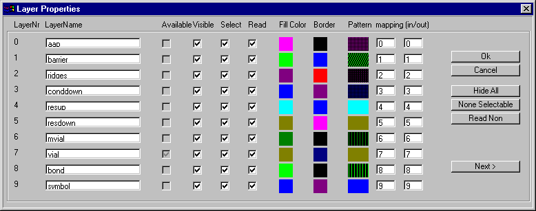
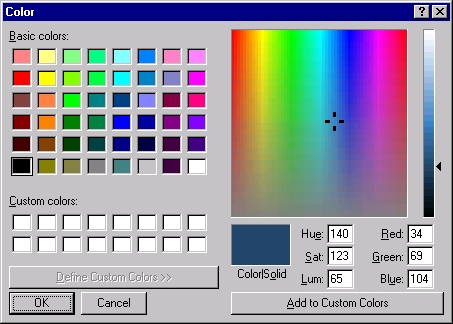
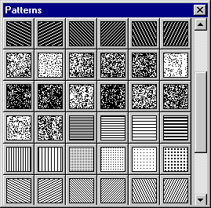
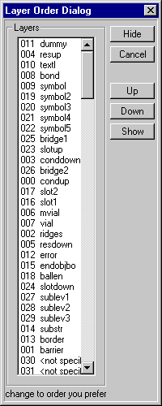
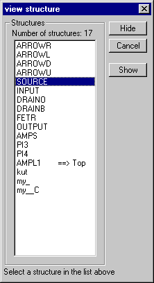

With the View menu can be defined how and which structures and
layers are drawn. Click on one of the commands in the figure below
for an explanation of it.
When this item is clicked the dialog in the picture below appears.

It can be used to alter the layer properties. Layers can be given
other names, fill-colors, border-colors and patterns. The visibility
can be turned on or off, just like the option wether or not a layer
is selectable. The availability cannot be altered; this box is
automatically checked when a layer contains elements.
The name of a layer can be changed by clicking in the corresponding
editbox, containing the current name. The name you type in the box
will be the name of this layer.
To make a layer visible or unvisible, check or uncheck the box in the
Visible column. All layers can be made hidden at once clicking
the Hide All button on the right side of the dialog. When this
button is clicked, the caption is changed into Show All.
Clicking this button again will make all layers visible. When a layer
is unvisible, doesn't always mean operations are not performed on this
layer.
To change the color with which the elements are drawn, click in one
of the colored boxes in the columns Fill Color or Border.
The dialog below will appear. You can choose a color and click OK to
assign this color to a the elements on a layer.

You can also add a pattern to a layer. Click in one of the boxes in the
column Pattern to modify the current pattern. The dialog in the
picture below will appear. Click one of the patterns to select it. If
you want a layer not to have a pattern, click the black box in the upper
left corner of the Patterns dialog.

To change the order in which the layers are drawn, use the
Layer Order Dialog in the image below. Select a layer in the
listbox, and click the up or down button to move it up or down
in the listbox order.
Layers on top of the listbox will be on top in the drawing.

When a file is loaded, all structures are drawn on the screen. It's
also possible to view the structures seperately. When the menu-item
View Structure in the View menu or mouse menu is clicked,
the dialog below appears. Select one of the structures and click
Ok to view this structure.

To improve drawing speed, you can specify that only the outlines
of elements are drawn. When Draw only outlines is clicked,
a checkmark is placed in the menu which means this option is selected.
The coordinates in the statusbar can be switched off using this command.
A checkmark will be placed in the menu when this option is turned on.